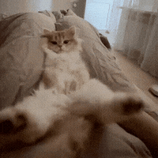

“인간은 왜 인터넷에서 악플을 다는가”
댓글
그러니까 그걸 그냥 메모장에만 배설하면 집에서 혼자 설치는 것과 같은 건데 남들 다 보는 곳에 배설하면 “내 똥을 봐라” 하는 거니까 일종의 창작 욕구가 맞지
그건 굉장히 자유롭게 뭐든 한다는 인터넷이란 공간 특성이 빠진 얘기라
쟤들도 뭐 그냥 악플러를 긁어보고 싶은 거지 딱히 깊게 생각은 안 한 듯 ㅇㅇ
배설의 장소로 그러한 공간 특성을 가진 인터넷을 선택했다는 게 창작을 통한 인정 욕구의 발현이라 볼 수 있지 않을까
좆까
이것도 창작임?
너무해
뭐래 ㅋㅋ
집에서도 그러는데 관측을 못하는거 아냐?
사람 없는 공원에서는 잘 보기 힘들다잖아…
난 사람 없는 공원이나 강변에서 끼얏호우 하면서 짬푸 달리기 하는거 좋아함
거기까지다!
ㅋㅋㅋㅋㅋㅋㅋㅋㅋㅋ

반박하고 싶지만 이재규 이새끼 주짓수 블랙벨트라 참는다


내가 다는 건 악플이 아니라 건설적인 비판이며 정당한 분노이자 정의의 집행이다!!

관심종자라는거네?
결국 이것도 색욕이다
허영심은 느끼고 싶고 그러기엔 연마한 정교한 기술은 없고
걍 찍 싸고가는거지 뭐 대단한 악의와 동기를 가지고잇는줄아네
악플러의 근본은 어떻게든 관심이 고픈 보잘것없는 개인이다라는거구나
악플다는 이유 = 아직 고소를 안당해봐서
개소리같지만 조지오웰 인용하니 그럴싸해보인다
미룬이 사태
아아 모두에게 나의 배설물이 보여지고있어..아자자잣!
조지 오웰 왜 쓰는가는 4가지 이유였는데, 욕망. 정치. 나머지 2개는 모르겠네.
저 사람 말이 맞을 수도 있고 틀릴 수도 있지만 말을 들어 보면 몇 가지 문제가 있음.
1. 악플러뿐만 아니라 인터넷에 댓글을 다는 사람들 전체를 저격하는 것처럼 들리기도 함.
2. 너무 느낌으로만 적었음. 그냥 의식의 흐름대로 결론을 냄.
저 결론은 결국 본인의 생각일 뿐임.
댓글의 의도를 추론하는 건 가능하지만 그 댓글을 쓴 이유까지 추론하기는 더 어려움.
그런데 그걸 단정 지어 말하는 건 결국 본인의 느낌일 뿐이라는 거임. 그래서 신뢰가 떨어짐.
뭐래 그냥 배설이지 ㅋㅋㅋㅋ